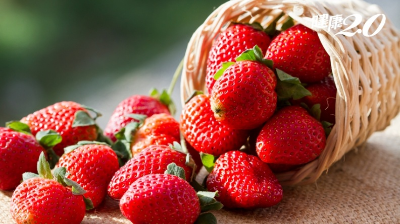

草莓
介紹
中國大陸和台灣稱草莓，在香港常稱為士多啤梨（英語：strawberry），為草莓屬中最常見的雜交栽培種。草莓是多年生草本植物，一般存活時間為3年左右。人們所食用部份的果實是假果，並非草莓的果實。不同於大多數水果由子房發育而成，草莓的食用部份是由花托在傳播花粉後發育變大而成，而真果及種子則是佈滿草莓表面的眾多小點狀物。
aba)

型態
草莓是
薔薇科草莓屬，
植物中最常見的一雜交種，屬多年生草本植物，高10-40厘米，莖低於葉或近相等，密被開展黃色柔毛。葉三出，小葉具短柄，質地較厚，倒卵形或菱形，上面深綠色，幾無毛，下面淡白綠色，疏生毛，沿脈較密；葉柄密被開展黃色柔毛。聚傘花序，花序下面具一短柄的小葉；花兩性；萼片卵形，比副萼片稍長；花瓣白色，近圓形或倒卵橢圓形。聚合果大，宿存萼片直立，緊貼於果實；瘦果尖卵形，光滑。親本為原產於北美洲的弗州草莓（F. virginiana）及來自南美洲智利的智利草莓（F. chiloensis），後在法國進行雜交繁殖。現在是栽培最廣泛的草莓品種。八倍體植物，種子發芽期需10-14天。深紅色圓形或心臟形漿果體，肉純白，萼片和苞片展開。
特性
果實略呈心形，鮮紅多汁，質地柔軟，酸甜適中，氣味芳香。而且繁殖容易，只需半年便可結果收成，傳統收成時間為春夏兩季。每株可收成兩年，收成期亦長達半年，可為果園在果樹成熟結果前增加土地使用率及增加收入。唯草莓因為果實的特性，只要進入開花期，便不可再使用農藥，否則會有農藥殘留。
資料來源: